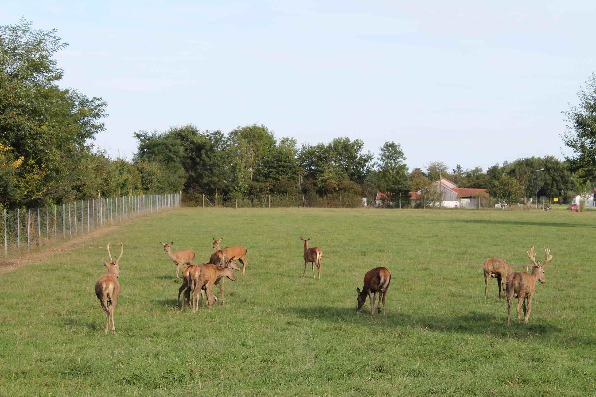

Wilkommen bei Rotwild Haselbeck!
Der letzte Verkauf der Saison 20/21 findet am 22. und 23. Januar 2021 statt. Die Saison 21/22 wird voraussichtlich wieder im Semptember 2021 beginnen. Wir freuen uns auf Sie!
In unserem Rotwildgehege lebt die größte bei uns vorkommende Hirschart ganzjährig in Freilandhaltung.
Nicht zu verwechseln mit Reh, Damwild oder Sikahirsch.
Die Farbe des Sommerfells ist rotbraun und gibt dem Hirsch seinen Namen. Die Kälber sind rotbraun mit gelblichweißen Flecken. Der männliche Hirsch trägt ein vielendiges Geweih, das in der Brunftzeit zwischen September und Oktober zum Kämpfen mit den Rivalen eingesetzt wird. Das Geweih fällt meist im März ab und sogleich beginnt es neu zu wachsen, um im September noch größer als im Vorjahr seinen Besitzer auszuzeichnen. Der Hirsch ernährt sich rein pflanzlich. Der männliche Hirsch kann ein Gewicht von 250kg erreichen, die weibliche Hirschkuh bis zu 150kg.
Vom Geschmack ähnelt junges Hirschfleisch dem des Rehs, die Stücke sind allerdings größer als beim Rehwild.
Ernährungsphysiologisch ist das Fleisch sehr wertvoll. Es ist ein wichtiger Eiweißlieferant, reich an Mineralstoffen und den Vitaminen B1 und B2. Im Gegensatz zu anderen Schlachttieren ist das Wildbret sehr mager, fettarm und hat wenig Bindegewebe. Dadurch ist es von festerer Konsistenz, dennoch sehr zart. Es ist die älteste und ursprünglichste Fleischart und deshalb sehr gut verträglich und leicht verdaulich.
August 2021